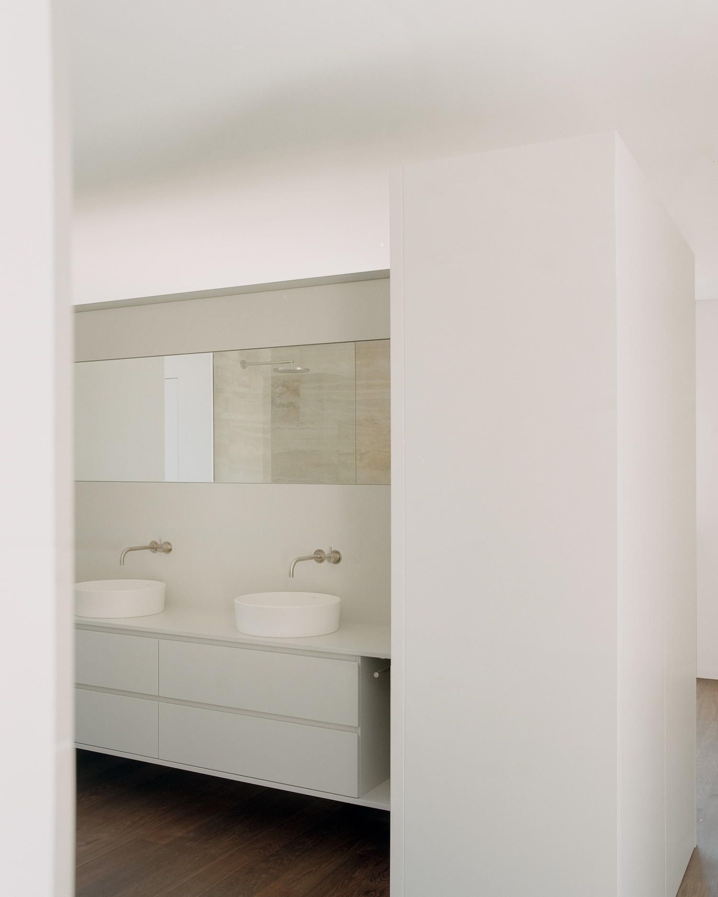
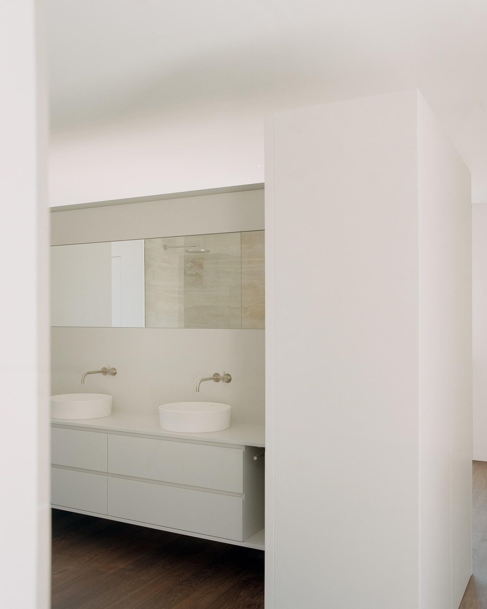

GIG
by Atelier Rampazzi
by Atelier Rampazzi
GIG is a minimal home located in Ascona, Switzerland, designed by Atelier Rampazzi. The architects approached this renovation with a poetic vision: “a green bush resting on a rock.” This metaphor became the guiding principle for the entire project, manifesting as a solid, sedimentary-inspired base supporting a verdant, living upper level. The materiality speaks directly to the geological context – rough striped plaster and exposed reinforced concrete echo the wandering gneiss boulders that traveled from nearby mountains to this alluvial plain, creating a subtle dialog with the site’s natural history.
What distinguishes this project is its commitment to what might be called “architectural humility.” Rather than announcing itself boldly to the landscape, the building employs a mimetic strategy, integrating so thoroughly with its surroundings that it becomes “almost imperceptible.” The extensive use of vegetation across terraces, pergolas, and green roofs further dissolves the boundary between structure and nature, continuing a tradition of biophilic architecture while executing it with particular sensitivity to local ecological conditions.
Inside, the spatial organization reveals a sophisticated understanding of domestic ritual. The ground floor centers around what the architect describes as “the warm heart of sharing” – a kitchen island with a double-sided fireplace that serves as a “sculptural pivot to communal living.” This arrangement reconnects with historical precedents, where hearths formed the spiritual and social center of the home, while reinterpreting this archetypal element for contemporary living.

 


Anya Moryoussef Architect
Smoke Lake Cabin

Bureau Tempo, Thom Fougere
Pine Island Cottage

WOJR
House of Horns